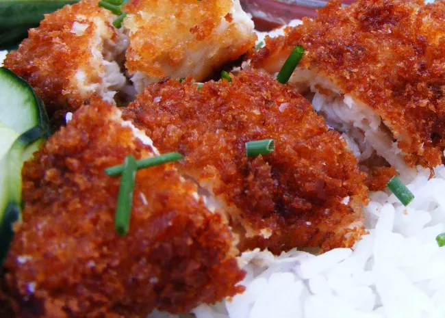

Chicken Katsu

Description
Katsu is a Japanese dish of crispy fried cutlets coated with
Panko bread crumbs. Popular varieties are chicken katsu
(like this recipe) and tonkatsu (which is made with pork).
Ingredients
- Chicken: You'll need four skinless, boneless chicken breast halves.
- Seasonings: This chicken katsu recipe is simply seasoned with salt and pepper.
- Flour: All-purpose flour helps seal in the moisture, adds flavor, and promotes browning.
- Egg: An egg adds moisture and gives the Panko something to stick to.
- Panko: Panko bread crumbs are responsible for katsu's signature crunch.
- Oil: Opt for a neutral oil with a high smoke point, such as canola or vegetable oil.
Steps
- Season the chicken with salt and pepper, then dredge in flour.
- Coat each chicken breast in egg, then press into the Panko.
- Fry the chicken katsu until golden brown.